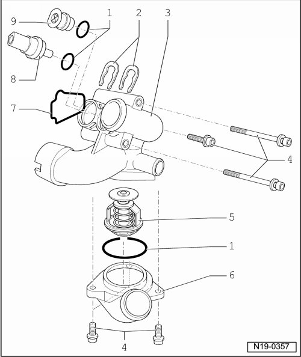

Thermostat Housing, Assembly Overview
Thermostat Housing, Assembly Overview
CAUTION!
When doing any repair work, especially in the engine compartment, pay attention to the following due to clearance issues:
• Route all the various lines (e.g. for fuel, hydraulics, EVAP system, coolant, refrigerant, brake fluid and vacuum lines and hoses) and electrical wiring so that the original positions are restored.
• Ensure sufficient clearance to all moving or hot components.
• Routing of coolant hoses to thermostat housing --> [ Cooling System Components, Engine Side, Assembly Overview ] Cooling System Components, Engine Side, Assembly Overview.

1 O-ring
• Replace
2 Retaining clip
• Check for secure seat
3 Thermostat housing
4 8 Nm
5 Thermostat
• Note installation position
• Check ; "Guided Fault Finding"
• Opening begins approximately 80° C
• Ends approximately 105° C
6 Connection
7 Seal
• Replace
8 Engine Coolant Temperature (ECT) sensor (G62)
• For engine control unit
• With Engine Coolant Temperature (ECT) gauge sensor (G2)
• If necessary release pressure in cooling system before removing
9 Plug
• If necessary release pressure in cooling system before removing